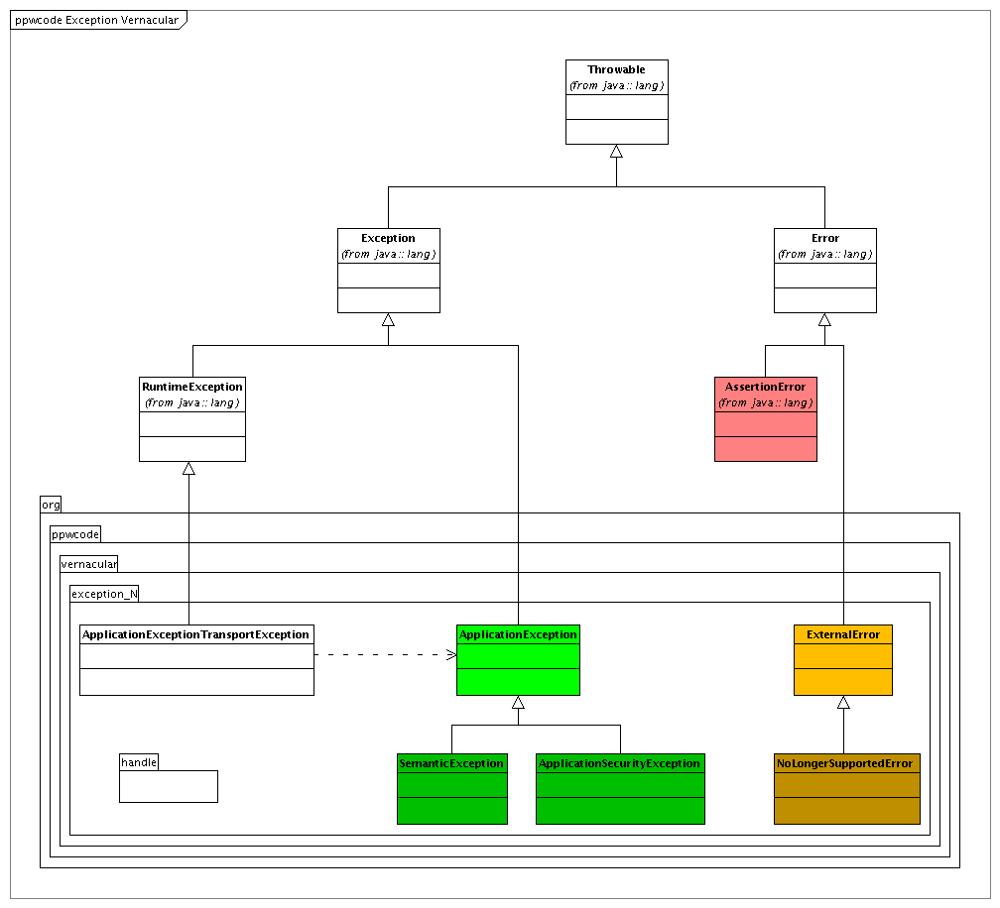

This text is in limbo.
One of the badly understood features of modern object oriented programming languages is the importance of exceptions and how to deal with them. In comparison to a complete application, the nominal flow of an application only takes a relatively small part of the development effort. The true development cost of an application is in the code that deals with exceptional conditions. This is especially true for a web application, where the liberties the end-user has, have to be compensated by application code. In essence, in all security sensitive applications, undetermined behavior is the major risk. If we do not deal with exceptional conditions, it means that anything can happen in these conditions, making the application inherently unstable and unsafe. And in web applications, based on the very simple, stateless HTTP protocol, there are so much more exceptional conditions than in a desktop application.
One popular approach to exception handling is to let them all propagate to the final layer, where the user is then presented with an error dialog or an error page. This is surely the cheapest way of dealing with exceptions: the application essentially crashes, and the user is left hanging out to dry. This approach is only acceptable in the most simple of demo applications, to show some nominal functionality quickly (and then you are cheating your audience). Where in desktop application this approach will annoy the user, in web applications, you are potentially creating a security hole and the possibility for corruption of your back-end data. In a web application, the end user will probably use his back-button, and try something else. However, since the previous outcome was unexpected, the application is now in an undetermined state, and we cannot know for sure even how our nominal code will act when called in this state (in practice, the session and application scope is no longer to be trusted). From this example it should be clear that, in many cases, a real crash of the application is often the best possible outcome, to avoid uncontrolled access and data corruption.
Now, if you choose this popular approach of letting all exceptions propagate to the final layer, working with checked exceptions is cumbersome: each method has to declare that it throws the possible exceptions we just want to propagate anyway. So, in this frame of mind, an aversion against checked exceptions comes naturally. Hence, another popular practice has become for frameworks and libraries to use unchecked exceptions (e.g., Spring, the JSF specification and Hibernate 3). As we shall see below, this might be an acceptable approach for some kinds of exceptional conditions, but certainly not for semantic exceptional conditions.
Yet, it is not so hard to deal with exceptions properly. The first step in dealing with exceptions is to understand the different kind of exceptional conditions that can occur during execution of your program. In essence, an exceptional condition is anything that is not explicitly forbidden (precondition) that keeps your code from reaching its nominal effect (postcondition). Calling code in violation of preconditions is not an exceptional condition, but a programming error.
Every method tries to reach its nominal postcondition (which is oftern not completely deterministic in an environment with dynamic binding like an object oriented programming language). That is its reason for being. During its execution, it might encounter exceptional conditions. When this happens, the method can decide either to work around this condition, and still reach its nominal postcondition, or it can decide to give up. In the first case, the condition actually is not considered exceptional, but part of the normal operational conditions, in which the nominal effect is reached. In the latter case, execution of code should be halted in a controlled fashion. This means that nothing in the state of the program should have changed: it should be as if the method that cannot reach its nominal postcondition, was never called in the first place. The method should be atomic: either it reaches its nominal effect, or it does nothing. Furthermore, the caller of the method should be warned about the success or failure of the method call.
Throwing an exception is the ideal way for a method to signal that it cannot reach its nominal effect as described by the postcondition. After detection of the exceptional condition, nominal execution stops, and the method makes sure that nothing is changed to the overall state of the system (either because the method didn't make a change yet, or because the method rolls back all changes it made). Then, it signals its failure by throwing an exception.
If a method cannot reach its postcondition, and it is impossible for the method to behave in an atomic way, the caller should be aware of this. The calling method itself should be atomic too, and if the called method cannot do this, than the calling method gets the burden. If this is a problem for the calling method too, by unwinding the call stack, we finally reach the main method (or it's equivalent in a web application). Here we have only 1 recourse: quit the application gracefully.
Now, what are the possible reasons why a correctly implemented method, if called in acceptable conditions, i.e., not in violation of its preconditions, cannot reach its nominal postcondition? Here are 2 major types of conditions:
null.The above examples obviously are based on the premise that network connection stability, network administrator clumsiness and the amount of RAM in the machine are outside the system we are developing. If you consider such occurrences to be within the system, you either do not consider them exceptional, and consequentially have dealt with them in the nominal flow of your code, or you consider the conditions to be of a semantic nature. If not, you have a programming error.
From this, it follows that the main difference between the 2 presented types of conditions is whether they are considered internal or external to the system. Other internal exceptional conditions might have to do with security, or be technical. Other external exceptional conditions might be of semantic nature, e.g., when DB corruption is encountered.
Since we want to signal exceptional conditions using exceptions, it seems like a good idea to introduce different exception classes for these kinds of exceptions. Henceforth we shall speak of internal exceptions and external exceptions, as exceptions that signal issues that are considered to be inside the system, which should be dealt with, or outside the system, which should result in graceful shutdown, respectively. Semantic exceptions are internal exceptions that signal internal exceptional conditions of semantic nature. Technical exceptions signal external exceptional conditions of technical nature, but this distinction will prove rather moot later on.
END OF CONFUSION
Programming errors are not exceptional conditions, not in the
sense that we make mistakes a lot, but in the sense that exceptional
conditions are still expected conditions, and programming
errors are not. Sadly, software requires the programmer to take into
account all possible conditions that can occur during the execution
of his code, exhaustively, for the code to have a chance to be
correct.
Correctness of code is defined as the mathematical
guarantee that, if a method is called within the boundaries set by its
preconditions, all method calls will result in either,
A programming error is anything that (potentially) causes different behavior.
For a method to be able to guarantee
correctness, it must take into account in its implementation all possible
conditions that can occur during execution, that do not violate
preconditions. In other words, all possible conditions must be
exhaustively known, and either be listed in the preconditions as
unacceptable for the method, or be dealt with in the code. The latter can
mean reaching the nominal effect in those conditions, or throwing an
exception.
So, if a method behaves weird when it is called in
violation of its preconditions, this is not a bug in the implementation of
the method. Actually, as method implementors, we don't care about this.
Calling a method in violation of its preconditions is a programming error in
the implementation of the calling method, not of the called method.
The point I'm trying to make is, that if a condition can occur
during execution of a method that was not taken into account either
in the preconditions or in the code, i.e., it is an unexpected
condition, you have made a programming error . Since you
didn't expect the condition, you didn't reason about how your code behaves
when it occurs, and as a consequence the state of the entire system has
become undetermined : we don't know where we are anymore, and
anything we do now will have unpredictable consequences. If you look at it
as having forgotten to list the condition in the method's preconditions, it
is clear that the calling method will be quite surprised, and since it has
no clue what happened, it cannot react.
An unexpected
condition is different from an expected exceptional
condition. We have reasoned about expected conditions,
and
Note that encountering unexpected conditions is not the only kind
of programming error possible. You can, e.g., also blatantly fail to reach
your postcondition, when you typed a - where a +
was in order. But it is a very important kind of programming error, because
it is very difficult to always be exhaustively aware of all possible
conditions.
Very many unexpected conditions will turn up as
unexpected exceptions in Java, like a NullPointerException (we
didn't take into account the situation where the parameter is
null), or an ArithmeticException (we forgot the
nominator variable could be 0 in a division). But also not
taking into account a possible ExceptionInInitializerError when
calling java.lang.reflect.Method.invoke() on a constructor, or
not taking into account a possible SQLException when executing
a SQL statement using java.sql.Statement.execute() are
programming errors of the same kind.
Exceptions raised in this fashion should not concern a theory of dealing with exceptions in correct programs. However, as it stands, we do get them for free, and in a modern language like Java or C# much more than in older languages like C, C++ or Delphi. Many programming errors that would go unnoticed at first in older-generation programming languages, at least are signaled immediately in the current generation. This is a very good thing, because the system becomes undefined once we executed the buggy code, and anything we do after that makes things worse, potentially corrupts our data, or opens up security holes. So, while talking about exceptions, it is not a bad thing to take these occurrences into account, and to formulate a strategy for dealing with them.
Consider the fact that it is very hard to always be exhaustively aware of all possible conditions. As humans, we can manage conditions that are considered to be part of the nominal flow of methods we use. Being exhaustively aware of all exceptional conditions for the methods we use, or their preconditions, is much more difficult. Now, in these modern languages, we can define the exceptional conditions (and in some languages even the preconditions, but not in Java) of methods we use, with a language construct of which the compiler is aware. This means that, while we are programming our code, the compiler in the IDE will exhaustively list for us all possible exceptional conditions, and bar us from delivering code that does not explicitly deal with these conditions in some way.
At least, that is, if the exceptional conditions are listed as checked exceptions in the signature of the methods we use. If, for a called method, we exhaustively considered all possible conditions, and we listed exceptional conditions as checked exceptions that the called method can throw (forgetting preconditions for a moment), the compiler will make sure that in the calling method's implementation, we considered all possible conditions for this particular method call. If the method is robust (there are no preconditions), this means that coverage is complete for this one method call, and if this is applied to all code in the calling method's implementation, coverage is indeed complete for the entire method. This computer assistance is an enormous help in trying to get correctness!
With this in mind, maybe you can understand my
aversion against unchecked exceptions. When the methods I use only list
unchecked exceptions, my IDE can't help me in being aware of all possible
conditions, and I must revert to looking things up by hand in Javadoc. The
loss in efficiëncy is enormous. Given, the IDE only warns me about potential
exceptions. I still need to look up by hand the conditions under which these
exceptions might be thrown (the Javadoc throws clause), because
that is what I need to consider in my implementation. But still, the aid I
get is enormous when compared to no help at all.
Exceptions raised as the result of a programming error are a mechanism that allow us to efficiently do what is the only thing we can do when these errors do make it to production software: gracefully quit the application a.s.a.p., before more harm is done.
Note that this is the best possible behavior for any sort of programming error, not only when unexpected exceptions occur. Programming errors that result in an unexpected exception feature this behavior naturally. But there is also a large class of programming errors that we might detect ourselves.
A best-practices programming style is to
write down all thoughts about you're algorithm using assert
statements. Programmers will recognize this experience: while coding, now
and then, you sit back and take a look at your method's implementation, and
you reason about it: can this variable be null here? what does
my implementation do on a Thursday? etcetera. The whole idea behind this
programming style is to immediately take down the result of this short
brainstorm as an assertion. You have just spend some minutes proving to
yourself that this variable can never be null in this place in
your code: this proves that this knowledge is not trivial. So, it should
surely be documented. Now, rather than writing a //-comment,
by writing an assert -clause, you're assumption will also be
put to the test during execution (when assertions are enabled). If the
assertion fails, it means that your reasoning was flawed, and thus that you
have made a programming error. The assert-mechanism will throw
an exception when this happens, which is exactly the behavior we said above
we'd like.
Now and again, you also encounter the situation where we
might detect a programming error in the flow of the code. E.g., as the
result of a test (an else -branch that cannot occur in a large
decision tree, or a default case in a switch
-statement), or as an exception that, according to your reasoning, should
not occur (i.e., an unexpected checked exception, for which you have to
write a catch -clause anyway). Instead of merely writing a
comment in these cases, it is a good idea to write assert
false; as the body of this branch or this catch -clause,
or throw an exception or an error of another kind (the assert
-mechanism doesn't provide for extensive reporting on the error; this is
especially sad when we encounter an unexpected exception, that usually
carries a lot of interesting debug information; on the other hand, the code
for throwing an exception cannot be easily disabled using runtime options,
like assertions).
Finally, an important type of programming errors
is the calling of methods in violation of their preconditions. This kind of
programming error can, sadly, not be checked statically by the compiler, and
also cannot not be checked with unit testing (unit testing can only check
whether postconditions are reached in a number of test cases, that must
adhere to the preconditions). Again, it is best-practice to take down
preconditions at the start of your method in code, using an
assert-clause. Any violation of preconditions while calling
methods in the implementation of a method will then be signaled, hopefully
during the test phase of your lifecycle.
With these practices in
place, we know that a large portion of potential programming errors will be
signaled by the occurrence of either an unexpected exception (which only can
be an unchecked exception) or a java.lang.AssertionError. I
also hypothesize that any other kind of programming error is related to not
reaching the postcondition (including throwing expected exceptions), and
thus in the realm of unit testing.
The above clearly gives the hint
that unchecked exceptions (and java.lang.Error instances) have
a role to play in the context of programming errors, and that checked
exceptions should be used for all expected exceptions. Since we presume to
write correct software, it does not make sense to foresee programming errors
in the throws-clause of a method signature. Exceptions that signal
programming errors are unexpected in essence. Using checked exceptions for
expected exceptions gives the IDE the opportunity to help us in taking into
account all possible conditions in our algorithm exhaustively.
Now that we have discerned different kinds of exceptions, we need to contemplate what we want to do when they occur.
When a
semantic exception occurs, we want to block the operation and
warn the end user, so that he can change his behavior and continue working
with the program. In my experience, a semantic exception occurs in an
interactive program when the end user provided faulty input or performed an
illegal operation (of course, a really good user interface would prohibit
the user action in these conditions in the first place, but with a classic
web application that is very hard). In a batch program, a semantic exception
would only occur with corrupt or incomplete input. I cannot imagine any
other final reason for a semantic exception then these, but please report
anything I might have missed. In both cases, it is important that the user
gets feedback about what he did wrong, for him to be able to correct his
input or behavior. Also, the same applies for any other kind of
internal exception (e.g., security exceptions) that reaches the
user.
So, in general, we know what to do. In particular, what we need
to tell the user exactly and how, depends on the particular kind of
exception, the exact circumstances in which it occurred, possible i18n
settings, and more.
When a technical exception, or any
other kind of external exception, occurs, there is little we can
do. Since these conditions are, per definition, considered to be outside the
system, we do not want to deal with them (otherwise, we would consider them
part of the system). By placing them outside of the system, we are saying
that we only guarantee correct behavior of our application when they do not
occur. This may sound very much like a precondition, and in fact it is.
These are (often implicit) preconditions for the system as a whole.
When a external exception occurs, we want to inform the user of that fact,
make clear that it has nothing to do with him, but we also want to notify
the persons that are responsible for solving the external problem, a.s.a.p.
The user cannot continue until the problem is fixed, and we exit the
application gracefully, making sure that no harm has been done.
So,
in general, we know what to do. In this case, the message to show to the
user can be very generic. But again, in particular, what we want to tell the
administrator has to be very precise for the particular kind of exception
and the exact circumstances in which it occurred. In this case, view-related
issues, like i18n, are of lesser or no importance.
Again, this is
very much like what we want to do when a programming error occurs, signaled
by an unexpected exception. The main difference between these 3 kinds of
exceptions, expected internal exceptions, expected external exceptions and
unexpected exceptions, is the audience to which they are of interest:
expected internal conditions are of interest to the end-user, expected
external conditions are of interest to the administrator, and unexpected
conditions are of interest to the developer. Sadly, because exceptions
necessarily occur at runtime, the end-user is always confronted with them.
For expected external exceptions, there is nothing we can do: shit
happens. We apologize to the user, and will correct the situation a.s.a.p.
With a web application, this is relatively easy to do (mail a trouble ticket
to the administrator and show a decent page to the end user). For a desktop
application, this is much more problematic. Either the end-user is the
administrator, and chances are that he doesn't have the ability to correct
the problem, or the administrator is unknown to us.
For unexpected
exceptions, the problem is greater. The developer is one sizable step
further removed from the running application. Mailing a trouble ticket is
feasible, but might be considered a back door by the client, and thus be
barred for security reasons. On Mac OS X, this is solved for desktop
applications by presenting the end-user with a dialog that gives him the
option to mail a trouble ticket to the developers. In a web application, if
mailing the developers is prohibited, we should at least have very good
logging. The same applies to expected external exceptions, of course.
From the above it should be clear that we should have code that, once and for all, implements the general behavior that we want for expected internal exceptions, expected external exceptions, and unexpected exceptions. Furthermore, it should also be clear, that there is little or no difference in dealing with expected external exceptions and unexpected exceptions.
First of all, we need a mechanism to recognize these different kinds of exceptions, so that we can trigger the applicable handling code. Secondly, we need the applicable handling code for the different kinds of exceptions, and it needs to be constructed in such a way that the appropriate particular behavior with respect to the particular kind of exception and the exact circumstances, and view-related issues, is executed in some way.
Obviously, in a modern language such as Java,
the way to recognize the different kinds of exceptions, is to introduce
different exception classes in an inheritance hierarchy, and to use these
types in the catch-clause to filter them out of all possible
exceptions. Therefor, we define a number of general exception classes in
ppw-exception:

A {@link be.peopleware.exception_II.ProgrammingError} could be used if an
assert-clause doesn't carry enough information for debugging
purposes. Furthermore, assert-functionality is usually disabled
in deployment after an initial acceptance phase for performance reasons.
Therefor, it is sensible to use{@link be.peopleware.exception_II.ProgrammingError} instead to
document branches that should be unreachable (the catch-clause
of exceptions that shouldn't occur, or else-branches of decision
trees or default branches of switch-statements
that should never be choosen). It would be nice if
AssertionError would be a subclass of {@link be.peopleware.exception_II.ProgrammingError}, but we cannot change the core API, of course.
Also, the other way around is not feasible, since
AssertionError doesn't provide a constructuror that takes a
Throwable as an argument, which is important information in
some cases. The user should be aware that the reaction higher up to
this error is probably an immediate shutdown of the application, with a warning to the developer and a note in the log.
An {@link be.peopleware.exception_II.ExternalError} should be used whenever an operation fails
because of expected reasons we decide are outside our system. When you decide to throw this error,
you should know that the reaction higher up probably is to shut down the
system, with a warning to the developer and a note in the log. We have choosen to use an Error here, because we feel
that code higher up should not be concerned with occurrences like these (we
do consider the occurrence outside the system, remember), unless it is the
code that is specifically handling external errors. The exception thus should
best be unchecked, and by providing a specific exception type for these
occurrences, it becomes easy to detect them at the higher levels, and write
the handling code in a general way. We could also have choosen to make {@link be.peopleware.exception_II.ExternalError} a RuntimeException (i.e., an unchecked
exception), we we believe the documented semantics of Error are
closer to our need.
{@link be.peopleware.exception_II.InternalException} is the general super type for all exceptions that signal expected exceptional occurences that we consider to be internal to the system. These should be dealt with, and to notify the programmer of this during development, this is a checked exception. The difference with other checked exceptions is that, by throwing an {@link be.peopleware.exception_II.InternalException}, we are telling our users that we decided that this occurence indeed is internal, and should be handled.
Other checked exceptions should be used, in particular by lower level libraries, to signal exceptional occurences, when the developer of that code does not want to decide whether or not the condition is to be considered internal or external, or a programming error. Take, e.g., a persistence library, that might need to signal that a file is corrupt. Some programs that use the library will consider this problem to be external, but the library can also be used by an application that specifically scans for corrupt files, in which case the condition is obviously internal. The point is, the lower level library is supporting code, and is not in a position to make the call. For reasons explained higher, I strongly believe that such a library should throw checked exceptions, though.
{@link be.peopleware.exception_II.SemanticException} is a subtype of {@link be.peopleware.exception_II.InternalException}, to be used as supertype to signal security related exceptional conditions.
At the moment, there are no general subtypes defined, and this exception has no special properties. This will probably change as the library evolves.
{@link be.peopleware.exception_II.SemanticException} signal that their was a semantic exceptional condition. Most often, this is related to what is more commonly known as validation.
BeanException
CompoundException
NOT RIGHT: HANDLING CODE SHOULD DO THE LOGGING? BUT THEN WE ARE NOT USING THE RIGHT LOG? NOT SURE!
LOOK FOR A LOGGER FOR ALL CLASSES IN THE STACKTRACE, USE ONE CLOSEST BY! USING THE CLASSNAME!
Programming errors should
be handled by special handling code, that is triggered by AssertionErrors and{@link be.peopleware.exception_II.ProgrammingError}, but also by
any other unchecked exception (RuntimeException) or Error that reaches the
handling layer. But since a layer handling {@link be.peopleware.exception_II.ExternalError ExternalErrors} should be defined immediately below this layer, and checked exceptions, most
notably {@link be.peopleware.exception_II.InternalException InternalExceptions}, are normally dealt with much
earlier, this handling code should handle all Throwables that
reach this layer. If {@link be.peopleware.exception_II.ExternalError ExternalErrors} or checked exceptions do
reach the handling code, that is a programming error in itself. The handling
code can benefit from getting AssertionErrors or{@link be.peopleware.exception_II.ProgrammingError}, because they make it possible to give more
precise feedback about the programming error.
The handling should catch the exception, log it, possibly notify the correct audience, and exit the application. The latter can possibly be done most easily by rethrowing the caucht exception. LOG LEVEL???
<<<< HERE
http://www.mindview.net/Etc/Discussions/CheckedExceptions
Abscence of proof is not proof of absence.
As a side note, now that we are
talking about the audiences for signaling issues, consider compilation
problems. A failed compile is a signal of a programming error to the right
audience, at the right time: the developer, during development. This is the
exact reason why strongly typed, compiled languages are to be preferred over
weakly typed or scripting languages: the compile phase is a validation at
the right time in the right context. Any programming error that can be
determined by an automated, static process is a programming error that will
not make it to the end-user, guaranteed. Programming languages that offer
more development-time validation are inherently better for production
software.
Assertions and unexpected exceptions are merely a stopgap
measure for validation that cannot occur statically at development-time.
Also, the concept of testing is introduced in the software development
lifecycle as a stopgap measure for the same problem: we hope that
programming errors will surface close to the developer, before the product
is shipped, by executing the code under as many conditions as possible, and
comparing the actual results of operations to expected results (an
unexpected exception, by the way, is always a deviation of the expected
result). But note that testing never guarantees correctness, the way formal
static verification does. The absence of failed tests doesn't guarantee the
absence of errors.
Also note that testing implies testing for
expected exceptions too: getting an exception in documented circumstances is
part of the expected behavior, as is the fact that the state of the system
is not changed when an exception occurs, or the change that does happen, is
documented.
Since we need to react differently to different kinds of exceptional conditions, and exceptions are the best way to signal exceptional conditions, it is clear that we should make clear which kind of condition occurred as part of the exception.
Modern programming languages like Java and C# make this extremely easy: exceptions of different types can exist, and the mechanism for catching the exceptions is especially tweaked to allow different reactions to different types of exceptions.
Therefor, one of the main contributions of the
ppw-exceptions library is the formal introduction of a
SemanticException type and a TechnicalException
type. Yet, still we need more specialized exceptions, for particular
conditions. As described above, we need to communicate particular
information about the actual condition (to the end-user or the
administrator). The place where we are throwing the exception is where we
have the most complete information about the actual condition possible. The
further away we move from this place, the less complete the information we
have becomes. On the other hand, this is not the place to communicate with
the user. First of all, the code that is calling us might still need to deal
with the exception itself. It might even deal with the situation itself,
without notifying the end-user or the administrator. What is exceptional to
us, might be nominal to code above us. Furthermore, advocating a clean
separation-of-concerns, if we are now in a layer that is not the
presentation layer, we should not concern ourselfs with end-user
communication. We should merely, semantically, gather the information
necessary, and report this information to the code that called us.
Now that it is clear what we want to do with exceptions finally, we can turn to the question when to throw exceptions. Again, we can consider the different kinds of exceptional conditions.
In general, we want to throw an exception when we cannot not or will not reach the nominal effect of the method we are implementing. As described, in correct code, this can be for semantic reasons or for technical reasons.
But when?
Recognize
we don't know that something is a programming error! so we can't throw them, only decide what to do them when we get one; difficult to recognize
Hey! That is the reasoning above about I don't care!
I must presume that we all want to deliver correct software. But we all know that is not trivial to. What is a good strategy to handle programming errors?
First of all, we should have a strategy that is aimed at discovering programming errors when the software is still in the hands of the programmers, before it is delivered. Secondly, we should have a strategy for dealing with programming errors that still remain in the software after it is deployed, despite our efforts.
usual things, prove, peer review, unit testing, integration testing, testing,
acceptance testing by selected audience
For dealing with programming errors that still surface when the software is deployed, we take into account the fact that this will be a rare occurrence. So we should not put too many effort in it. In this case it sadly is the end-user that is confronted with the error, so we need some blabla.
assert good enough; disable when you feel safe.
assert is good!!!!
Unchecked exceptions (and that includes errors) should be used to signal programming errors or technical exceptional conditions.
Problem is that that cannot be defined from the standpoint of the called method or operation: it can be called in different modes, and sometimes these are semantic or technical or error: the caller decides that, not the callee.